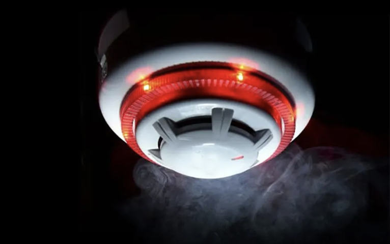

PROFESSIONAL SECURITY
Security Services Built Around You
Reliable guarding, patrol, response and specialist support for organisations, premises and events.
Find Out More →Eurosys provides a range of professional security services for businesses, sites, venues and private clients. Our manned guarding services are delivered by personnel who hold the appropriate SIA licence for the role and receive role-specific briefing and training. We combine people, technology and practical risk management to provide proportionate security around each client’s environment.
From guarding and patrols to investigations, CCTV, alarms and integrated systems, services can be delivered individually or combined around your operational requirements.
Our work ranges from day-to-day guarding and mobile response to CCTV, alarms, access control, fire detection and monitoring. We focus on practical security: understanding the site, identifying the risks and matching the service to the environment.
Eurosys can support retail, corporate, industrial, residential and event environments, as well as specialist assignments requiring discretion and close coordination.
We design, install and support CCTV, access control, intruder detection, fire alarms and physical security measures. Systems can operate independently or as part of an integrated security solution.
Explore Security Systems →
High-definition surveillance, remote viewing and analytics-ready solutions.

Controlled entry for staff, visitors, vehicles and restricted areas.

Detection and alarm solutions designed around the premises and applicable requirements.

Detection, alerting and integration for stronger site protection.
From a single event to ongoing guarding and integrated security systems, our team can discuss an appropriate solution.
Committed to professional standards, responsible working practices and continual improvement.